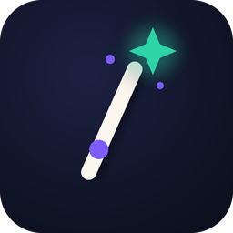

Privacy policy
Remote Wand: Universal TV & PC (com.krmndigital.remotewand) and Remote Wand Desktop · KRMN Digital · effective 8 November 2026
Summary: Remote Wand has no account system and we do not collect, store or receive any personal data on our servers — we do not have servers. Everything you set up stays on your phone. The free version shows ads through Google AdMob, which processes some data as described below; Remote Wand Pro removes ads entirely.
What the app stores on your phone
- Your saved devices (name, type, last known network address, and the pairing data each TV or PC gives the app: a certificate for Android TV, a token for Samsung, a client key for LG, a pairing key for Remote Wand Desktop).
- Your settings (language, theme, haptics, sensitivity, macros) and whether Pro is active.
These files live in the app's private storage, are excluded from Android backups, are never uploaded anywhere and are deleted when you uninstall the app.
Network communication
| Purpose | Who receives it | What is sent |
|---|---|---|
| Controlling your TV or PC | Only the device you chose, on your local network or over Bluetooth | Remote commands (keys, pointer movement, text you type into the TV field) and a device name for the pairing dialog, e.g. "Remote Wand (phone model)". Wi-Fi traffic to Remote Wand Desktop is encrypted (X25519 + ChaCha20-Poly1305). Traffic to TVs uses the TV maker's own protocol. |
| Finding devices | Your local network (multicast) | Standard mDNS / SSDP discovery queries. Nothing leaves your network. |
| Purchases | Google Play | Google Play Billing handles the Pro purchase; we only learn whether the purchase is active. Google's privacy policy applies. |
| Ads (free version only) | Google AdMob (Google LLC) and its advertising partners | The advertising ID, approximate location derived from the IP address, device and app information, and ad interaction data, as described in Google's policies. In the EEA, the UK and Switzerland you are asked for consent first (Google User Messaging Platform) and can change your choice in Settings → Privacy options. Pro removes ads and this data flow. |
Remote Wand does not use analytics or crash-reporting SDKs and has no server of its own.
Remote Wand Desktop (PC companion)
The desktop program listens on your local network for phones you paired with a PIN, and stores the pairing keys and the names of paired phones in its configuration folder on the PC. It makes no internet connections.
Permissions
| Permission | Why |
|---|---|
| INTERNET, ACCESS_NETWORK_STATE, ACCESS_WIFI_STATE, CHANGE_WIFI_MULTICAST_STATE | Talk to TVs and PCs on your local network and discover them. |
| BLUETOOTH_CONNECT, BLUETOOTH_ADVERTISE (Android 12+), BLUETOOTH / BLUETOOTH_ADMIN (older) | Make the phone appear as a Bluetooth keyboard and mouse and connect to the device you paired. The app never scans for nearby devices and does not request location. |
| VIBRATE | Haptic feedback on keys (can be turned off). |
| com.android.vending.BILLING | Remote Wand Pro purchase through Google Play. |
| AD_ID | Google AdMob in the free version. |
Children
Remote Wand is a general-purpose utility and does not knowingly collect any information from anyone, including children.
Your choices
- Forget a device in the app to delete its pairing data; uninstalling deletes everything.
- Reset or delete your advertising ID in Android settings; buy Pro to remove ads.
- Questions or requests: krmndigital@gmail.com.
Changes
If this policy changes, the new version is published on this page with a new effective date.